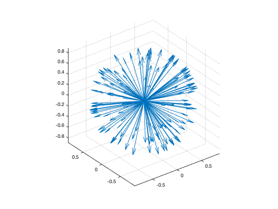

3D quiver plot from quaternion array.
(Quaternion overloading of standard MATLAB® function)
h = quiver3(o, p, varargin)
quiver3 plots a 3D quiver plot of elements in a pure quaternion array. It supports the same parameter profiles as the MATLAB® function of the same name, except that the first three or six parameters (X, Y, Z, U, V, W) are replaced by a one or two quaternion parameters, which must be pure quaternion arrays. If one quaternion parameter is given, the other is inferred as an array of zeros. If both are given, the quivers plotted start at the quaternion value represented by the first parameter and end at the values represented by the second.
The varargin parameters are passed to the Matlab quiver3 function, and must therefore conform to the requirements of that function.
The output parameter is optional, with the same functionality as the corresponding MATLAB® function (a graphics handle).
For more sophisticated requirements, use the Matlab function and pass the X, Y, Z, and U, V, W components of the quaternion array(s) as the first three or six parameters.
>> quiver3(randv(1,128)); axis equal
results in the creation of a plot similar to the following.
